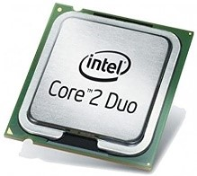

En la siguiente línea del tiempo se muestran algunos procesadores Intel que han sidos desarrollados a lo largo del tiempo. La línea del tiempo esta desarrollada con bootstrap y js, al presionar el año se muestra la descripción del evento así como una imagen representativa.
Selecciona el año que deseas ver
Procesador Intel® Xeon® | Intel lanza el primer procesador de 64bits para su línea Xeon (Nocona), la arquitectura 64-bit x86 es la que se utiliza en todos los CPUs de la actualidad.
Procesador Intel® Core™2 Duo E8400 | Cantidad de núcleos 2 Cantidad de subprocesos 2 Frecuencia básica del procesador 3,00 GHz Caché 6 MB L2 Cache Velocidad del bus 1333 MHz Paridad FSB No TDP 65 W Rango de voltaje VID 0.8500V-1.3625V
Procesador Intel Atom® serie X | Cantidad de núcleos 4 Cantidad de subprocesos 4 Frecuencia básica del procesador 1.44 GHz Frecuencia de impulso 1.92 GHz Caché 2 MB L2 Cache Scenario Design Power (SDP) 2 W Litografía 14 nm Número de procesadorx5-Z8330
Intel Core i9-9900 KF | Este procesador cuenta con la cantidad exacta de 8 núcleos y 16 hilos con frecuencias de trabajo que van desde 3,6 a 5 GHz.
Intel Core i7-9700 KF | Cantidad de núcleos 8 Cantidad de subprocesos 8 Frecuencia básica del procesador 3,60 GHz Frecuencia turbo máxima 4,90 GHz Caché 12 MB Intel® Smart Cache Velocidad del bus 8 GT/s Frecuencia de la Tecnología Intel® Turbo Boost 2.0‡ 4.90 GHz TDP 95 W